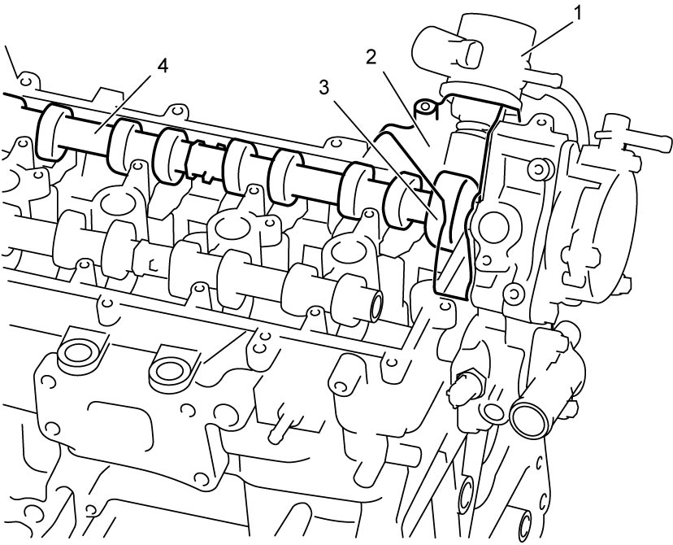
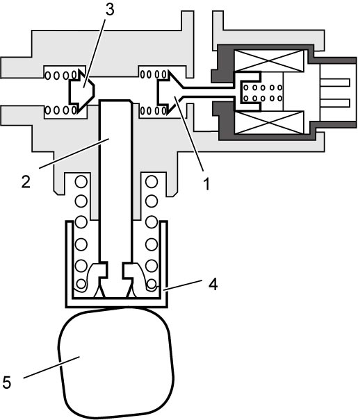
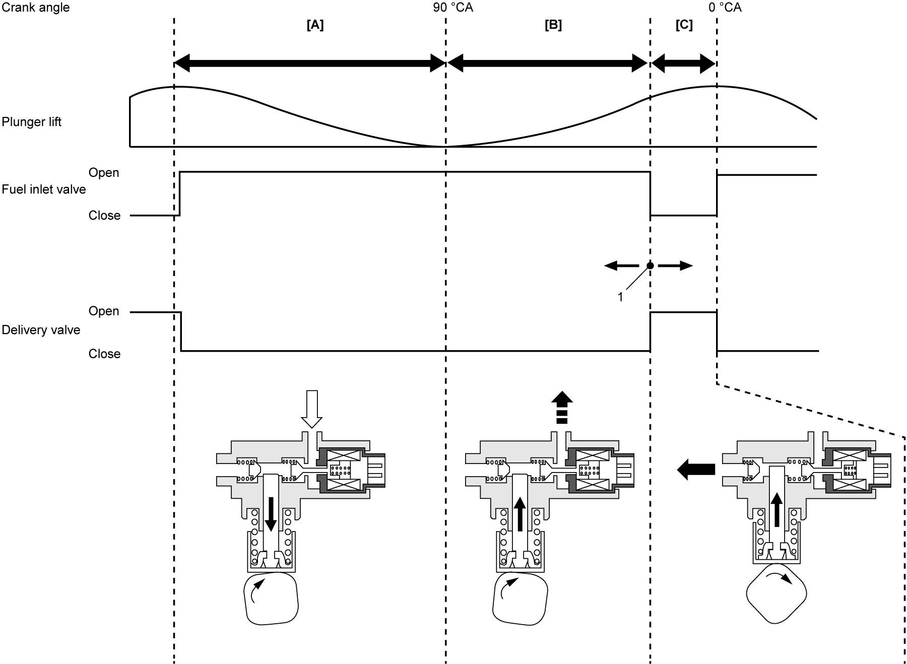

1G
| High Pressure Fuel Pump Description |
System Description
The high pressure fuel pump (1) is mounted on the camshaft rear housing (2) on the cylinder head and driven by the high pressure fuel pump cam (3) incorporated in the intake camshaft (4).

 "Expand image")
The high pressure fuel pump consists of the fuel inlet valve (solenoid valve) (1) which controls OPEN / CLOSE from low pressure fuel passage, fuel compression plunger (2) which pressurizes fuel driven by the intake camshaft and delivery valve (3) which controls open / close to high pressure fuel passage mechanically.

 "Expand image")
| 4. | Fuel pump tappet | 5. | High pressure fuel pump cam |
Component Function
Fuel inlet valve: Operated by signal from ECM and controls fuel pressure (amount of fuel flow) for high pressure fuel line.
Delivery valve: Opens by pressure difference between front (high pressure fuel pipe – injectors) and rear (high pressure fuel pump inside) and supplies pressurized fuel into high pressure fuel pipe.
Fuel compression plunger: Pressurizes low pressure fuel 500 kPa (5.1 kgf/cm2, 72.5 psi) to 3 – 20 MPa (30.6 – 203.9 kgf/cm2, 435 – 2901 psi) and supplies it into high pressure fuel pipe.
High-Pressure Fuel Pump Function
Suction stroke [A]
Fuel inlet valve in high pressure fuel pump is open in this stroke with solenoid OFF and low pressure fuel flows into pressure rising chamber through this valve.
Spill stroke [B]
To pressurize fuel in the pressure rising chamber, compression plunger is pushed up by high pressure fuel pump cam but the fuel is relieved (returns) in this stroke due to open state of fuel inlet valve with solenoid OFF.
Extension of solenoid OFF time increases return fuel and reduces remaining fuel in the pressure rising chamber. In other words, extension of solenoid ON time reduces return fuel and increases remaining fuel in the pressure rising chamber.
Through this stroke, required amount of fuel flow into high pressure fuel pipe is controlled.
Delivery stroke [C]
Fuel inlet valve is closed in this stroke with solenoid ON. From the closing point of the fuel inlet valve, compression plunger is pushed up further by high pressure fuel pump cam and the fuel is pressurized in the pressure rising chamber. The pressurized fuel opens delivery valve when the pressure exceeds the specified value and the fuel is supplied to high pressure fuel pipe. A fuel pressure sensor mounted on the fuel delivery pipe detects the fuel pressure and receiving this pressure signal, ECM performs feedback control to maintain target fuel pressure for injectors.

 "Expand image")
| 1. | “Target Valve Closing Position of High Pressure Fuel Pump” in SUZUKI scan tool |